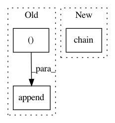

f4af199e0025065d7006fe326b55f25a74e9d625,models/cycle_gan_model.py,CycleGANModel,initialize,#CycleGANModel#Any#,15
Before Change
// initialize optimizers
self.optimizer_G = torch.optim.Adam(itertools.chain(self.netG_A.parameters(), self.netG_B.parameters()),
lr=opt.lr, betas=(opt.beta1, 0.999))
self.optimizer_D_A = torch.optim.Adam(self.netD_A.parameters(), lr=opt.lr, betas=(opt.beta1, 0.999))
self.optimizer_D_B = torch.optim.Adam(self.netD_B.parameters(), lr=opt.lr, betas=(opt.beta1, 0.999))
self.optimizers = []
self.schedulers = []
self.optimizers.append(self.optimizer_G)
self.optimizers.append(self.optimizer_D_A)
self.optimizers.append(self.optimizer_D_B)
for optimizer in self.optimizers:
self.schedulers.append(networks.get_scheduler(optimizer, opt))
After Change
// initialize optimizers
self.optimizer_G = torch.optim.Adam(itertools.chain(self.netG_A.parameters(), self.netG_B.parameters()),
lr=opt.lr, betas=(opt.beta1, 0.999))
self.optimizer_D = torch.optim.Adam(itertools.chain(self.netD_A.parameters(), self.netD_B.parameters()), lr=opt.lr, betas=(opt.beta1, 0.999))
self.optimizers = []
self.schedulers = []
self.optimizers.append(self.optimizer_G)
In pattern: SUPERPATTERN
Frequency: 3
Non-data size: 3
Instances
Project Name: junyanz/pytorch-CycleGAN-and-pix2pix
Commit Name: f4af199e0025065d7006fe326b55f25a74e9d625
Time: 2018-04-18
Author: junyanzhu89@gmail.com
File Name: models/cycle_gan_model.py
Class Name: CycleGANModel
Method Name: initialize
Project Name: pgmpy/pgmpy
Commit Name: 97b2ccec94583a7876566a340f06e84a63340272
Time: 2015-03-26
Author: pratyaksh@me.com
File Name: pgmpy/inference/ExactInference.py
Class Name: VariableElimination
Method Name: induced_graph